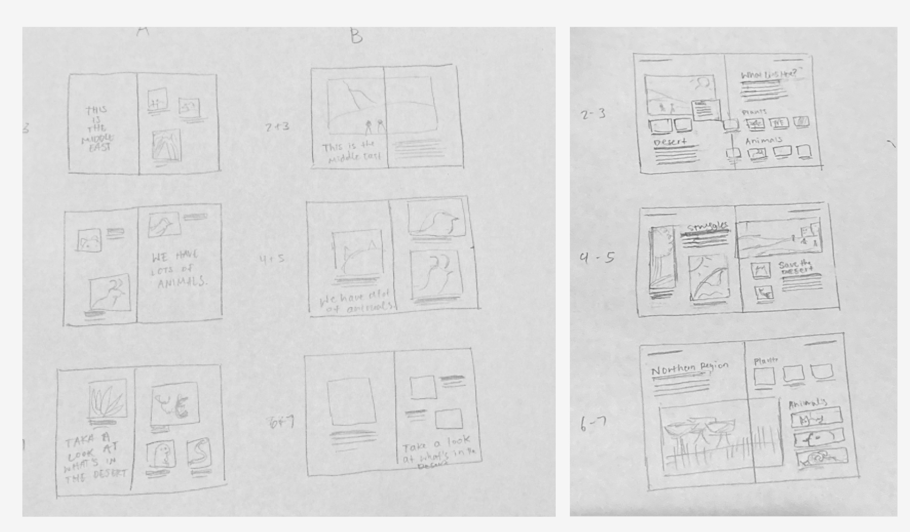
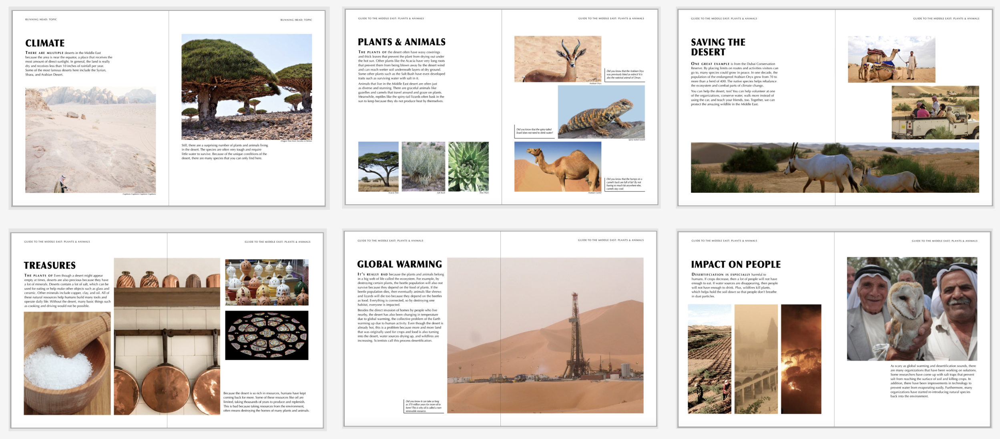
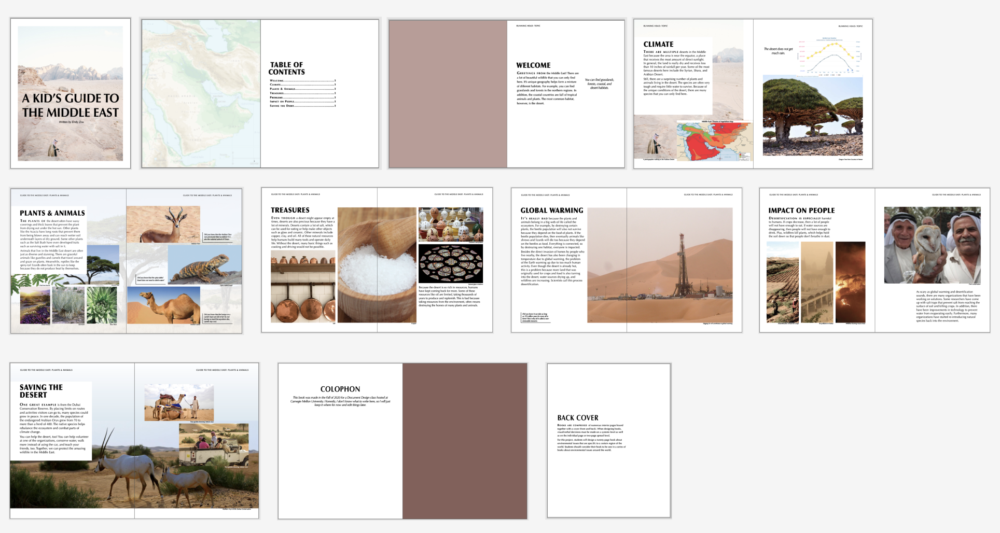

Children's Book Design
Created a physical children's book about the environment in the Middle East

Role
Product Designer
Timeline
Dec 2020 - Dec 2020
(1 month)
Tools
Adobe InDesign, Photoshop
Skills
Sketching, Wireframing, Prototyping
Overview
During the fall semester, I took a class called Document Design. As the final project, I was tasked to make a children's book on the Middle East. Over the course of a couple of weeks, I researched the area and domain, generated content, and then created many iterations of how I wanted the information to look.
Problem
Young children, particularly ages 5–8 years old, often have limited access to engaging, age-appropriate stories that reflect ecosystems, wildlife, and cultural landscapes. Much of the children's media they encounter is either imported and disconnected from their environment or too factual and dry to spark imagination. This gap can lead to a weaker connection with local nature, less environmental stewardship, and fewer opportunities to see their home region as a place of wonder and pride.
Results & value
I delivered a 14-page book that educates elementary children about the natural environment of the middle east.
- I researched and wrote age-appropriate content so that it remains fun and accessible for younger children.
- I sketched thumbnails and iterated on multiple interior spreads to ensure a consistent experience from the first page to the last.
- I blended text and illustrations in an engaging manner to deliver a memorable experience.



Final Design
In order to design a physical book, I collected a moodboard of inspirational books from National Geographic books and articles for kids. Then I sketched some thumbnails before committing to a grid layout. After that, I stitched the images and text and played around with placement. After multiple rounds of feedback from my professor and classmates, I delivered the final design.